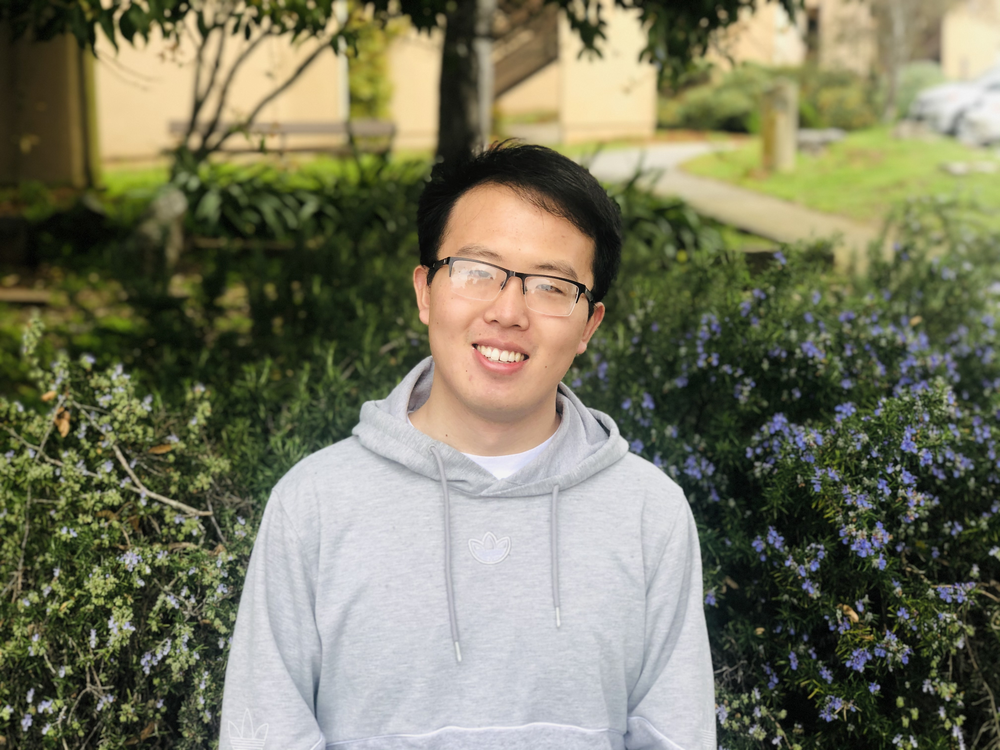

|
Wang, Nan (王 南)
|
 |
Post Doctoral Researcher in Hybrid Systems Laboratory,
Ph.D. candidate,
Department of Computer Science and Engineering,
University of California, Santa Cruz,
E-mail: before @ put ‘‘nanwang’’, and after the @ symbol write ucsc <dot > edu,
Address: Engineering 2-515, 1156 High Street, Santa Cruz, CA 95064.
LinkedIn; Google Scholar; ResearchGate
|
About Me
I received B.S. degree in automation science and engineering from East China University of Science and Technology, China, in 2015 and M.S. degree in control theory and engineering from Tongji University, China, in 2018. I received my Ph.D. in Computer Science and Engineering from University of California, Santa Cruz, where I was advised by Prof. Ricardo Sanfelice. I am now a Postdoctoral Researcher at UCSC continuing my work on hybrid systems, motion planning, and control.
Research
Reinforcement Learning and Control for Robotic Arm Throwing with Bouncing Dynamics
Built a full-stack simulation and control system using a Franka Emika Panda arm and
gripper modeled in MuJoCo, with control and training in Python.
Solved inverse kinematics (IK) for grasping and designed trajectory optimization for
throwing, enabling the ball to reach the target after one ground bounce.
Developed learning and control strategies to handle the hybrid dynamics of the thrown ball
(continuous flight and discrete impacts), training robust policies using Soft Actor-Critic.
Addressed MuJoCo-specific challenges, including accurate collision modeling, contact dynamics tuning, and hybrid event handling to ensure stable training and reliable performance.
Model Predictive Tracking Control for Hybrid Systems
Designed a model predictive controller for hybrid systems to track the motion plan generated by the motion planner. Proved the asymptotic stability property of the control system controlled by the proposed control algorithm.
RRT-Connect Fast Planning for Hybrid Systems
Achieved an average 77.0% improvement in computational time and an 80.1% reduction in
vertex creation using bidirectional propagation compared to the standard RRT algorithm,
demonstrated on bipedal robots.
Switched Reference Governore (Internship at Mitsubishi Electric Research Laboratories)
Developed a switched reference governor engineered to accelerate convergence rates while providing multiple guarantees.
Hybrid Globally Path-Invariant Control for Unmanned Ground Vehicle
Developed a path-following controller for UGV that establishes global convergence, robustness to sensor noise, and global path-invariance properties.
SST Optimal Planning for Hybrid Systems
Improved computational performance by 82.1% in computation time and 77.0% in vertex creation through vertex sparsification, with proven asymptotic near-optimality compared to the standard RRT algorithm, demonstrated on collision-resilient aerial vehicles.
RRT Feasible Planning for Hybrid Systems
Designed and implemented an RRT-based algorithm specifically for hybrid systems, achieving
a 95.5% enhancement in computational performance, with proven probabilistic complete-
ness.
Integrated the algorithm into the Open Motion Planning Library (OMPL). The implementation in C++ achieved an average real-time performance of 251 ms in solving a 6-dimensional
motion planning problem for a walking robot system, compared to over 54.7 seconds using
MATLAB.
Set-based Motion Planning for Drones in the Presence of Hybrid Obstacles
Formulated an unsafe set considering a set of possible motions of obstacles with hybrid dynamics, modeled using a hybrid equation framework. Designed a recursive motion planner for drones outside the unsafe set with the guaranteed safety property of the motion plans.
Foundation Theory on Motion Planning for Hybrid Systems
Formulated a motion planning problem using a hybrid equation framework, providing the convenience of reasoning most motion planning tasks under different specifications and complex dynamics constraints within the unified problem data.
Decision Making, Trajectory Planning and Control Modules Development
Developed a finite state machine-based decision-making module using Stateflow, a Bezier curve-based trajectory planning module, and a pure pursuit tracking controller using C++. The three modules are tested on CarMaker simulation software and a full-size autonomous vehicle platform configured by ROS.
Flow Field-guided Trajectory Planning for Ground Vehicles
Developed a flow field-guided trajectory planning software tool for ground vehicles using ANSYS ICEM CFD and Matlab/Simulink. (two conference papers and one journal paper published)
Recent Publications
Conference Papers:
N. Wang, A. Akhtar, R. Sanfelice. "Hybrid Globally Path-Invariant Control for Unmanned Ground Vehicle", submitted to 2025 IEEE International Conference on Automation Science and Engineering.
N. Wang and R. Sanfelice, "HyRRT-Connect: A Bidirectional Rapidly-Exploring Random Trees Motion Planning Algorithm for Hybrid Systems ", 2024 8th IFAC Conference on Analysis and Design of Hybrid Systems.
N. Wang, S. Di Cairano, R. Sanfelice, "A Switched Reference Governor for High Performance Trajectory Tracking", 2024 American Control Conference.
N. Wang and R. Sanfelice, "HySST: An Asymptotically Near-Optimal Motion Planning Algorithm for Hybrid Systems", The 62nd IEEE Conference on Decision and Control.
N. Wang and R. Sanfelice, "Rapidly-exploring Random Tree Algorithm for Hybrid Dynamical Systems”, The 61st IEEE Conference on Decision and Control.
A. Ames, N. Wang and R. Sanfelice, "A Set-based Motion Planning Algorithm for Aerial Vehicles in the Presence of Obstacles Exhibiting Hybrid Dynamics.", The 6th IEEE Conference on Control Technology and Applications.
M. Song, N. Wang, J. Wang and Timothy Gordon, “A fluid dynamics approach to motion control for rigid autonomous ground vehicles”, 25th International Symposium on Dynamics of Vehicles on Roads and Tracks.
N. Wang, M. Song, J. Wang, and Timothy Gordon, ” A flow field guided path planning method for unmanned ground vehicle”, The 56th IEEE Conference on Decision and Control.
Journal Papers:
N. Wang and R. Sanfelice, "Motion planning for hybrid dynamical systems: Framework, algorithm template, and a sampling-based approach", accepted by The International Journal of Robotics Research.
N. Wang and R. Sanfelice, "A Sampling-Based Bidirectional Motion Planning Algorithm for Hybrid Dynamical Systems", submitted to The International Journal of Robotics Research.
M. Song, N. Wang, J. Wang and Timothy Gordon, “Flow-field guided steering control for rigid autonomous ground vehicles in low-speed maneuvering”, Vehicle System Dynamics Special Journal Issue: Motion Control for Automated Driving and Autonomous Functions.
Patents:
Nan Wang, Mengxuan Song, Jun Wang, A Fluid Flow based Planning Method for Autonomous Vehicle. (Patent Number: ZL 2017 1 1144695.0)
Nan Wang, Mengxuan Song, Jun Wang, A Trajectory Planning Method based on Fluid Flow for Autonomous Vehicle. (Patent Number: ZL 2017 1 1240203.8)
Posters:
N. Wang, and R. Sanfelice, ” Motion Planning for Hybrid Dynamical Systems”, 2019 Bay Area Robotics Symposium.
N. Wang, and R. Sanfelice, ” Motion Planning for Hybrid Dynamical Systems”, 2020 16th Annual Graduate Research Symposium, UC Santa Cruz.
N. Wang, and R. Sanfelice, ” HyRRT/HySST: Sampling-based Motion Planning Algorithms for Hybrid Dynamical Systems”, The 2023 IEEE/RSJ International Conference on Intelligent Robots and Systems (IROS 2023), Detroit.
Presentations:
N.Wang, and R. Sanfelice, ” Hybrid RRT: Motion Planning for Hybrid Dynamical Systems”, 2022 4th annual NorCal Control Workshop.
N.Wang, and R. Sanfelice, "HyRRT: A Rapidly-Exploring Random Trees Motion Planning Algorithm for Hybrid Dynamical Systems", 2022 1st Brown Bag Seminar.
Academic Service
Technical committee member: IEEE Control System Society Technical Committee on Hybrid Systems
Journal reviewer:
IEEE Transactions on Automatic Control,
IEEE Control Systems Letters,
IEEE Robotics and Automation Letters.
Conference reviewer:
IEEE Conference on Decision and Control (2019/2020/2021/2022/2023),
American Control Conference (2020/2022/2024),
International Conference on Advanced Robotics (2021/2023),
IEEE Conference on Control Technology and Applications (2022/2023).
Teaching Assistance
Computer Systems and C Programming (CSE13S). University of California, Santa Cruz: 2020 Winter.
Database System (CSE181). University of California, Santa Cruz: 2020 Spring/2021 Spring.
Analysis of Algorithm (CSE 201). University of California, Santa Cruz: 2021 Fall.
Students Supervision
Adam Ames, A Set-based Motion Planning Algorithm for Aerial Vehicles in the Presence of Obstacles Exhibiting Hybrid Dynamics.
Awards
Chancellor's Fellowship
My resume.
My cv.
|